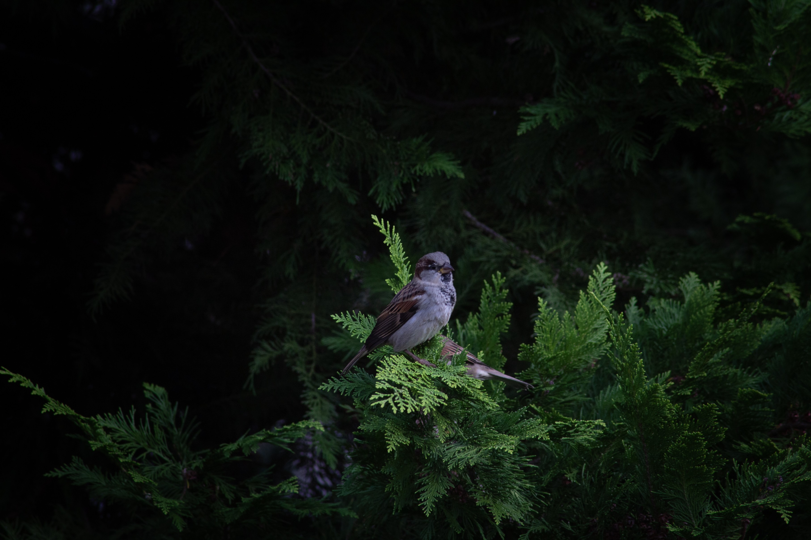
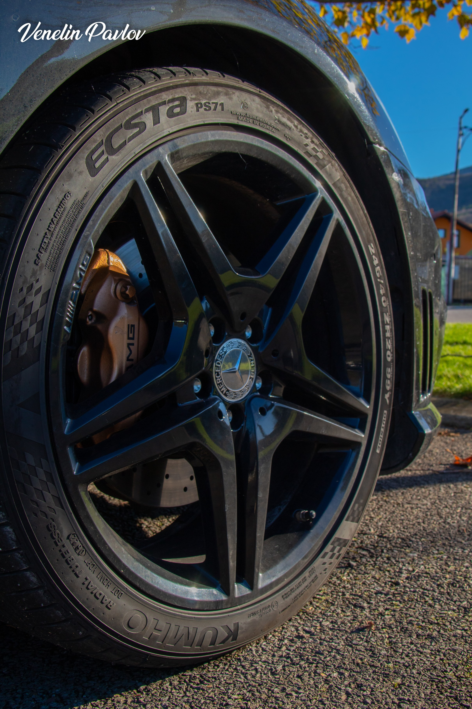
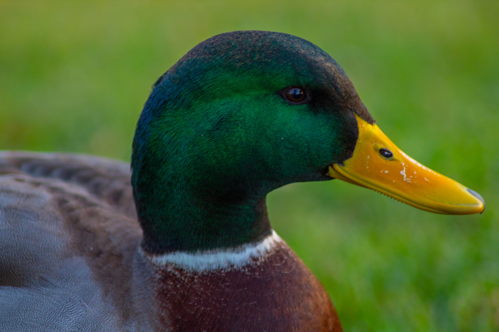
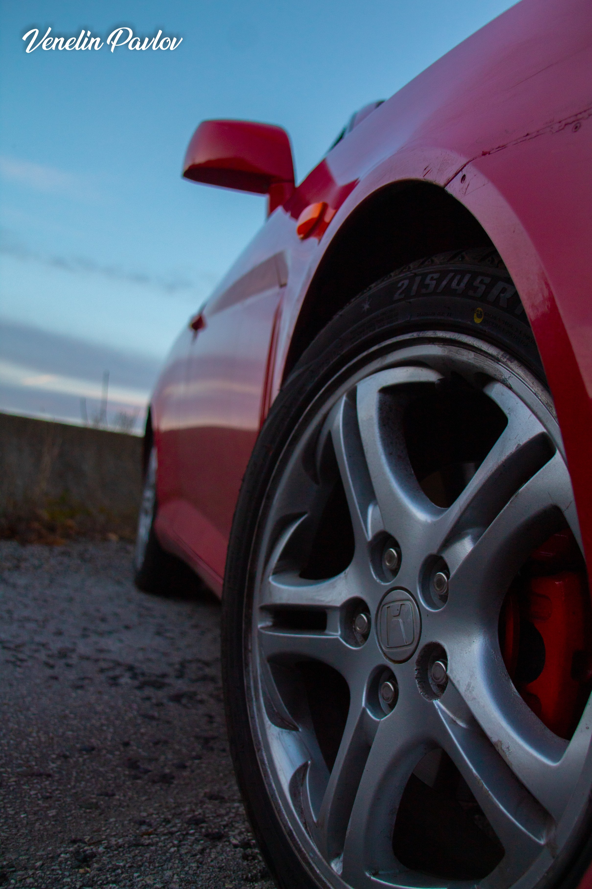
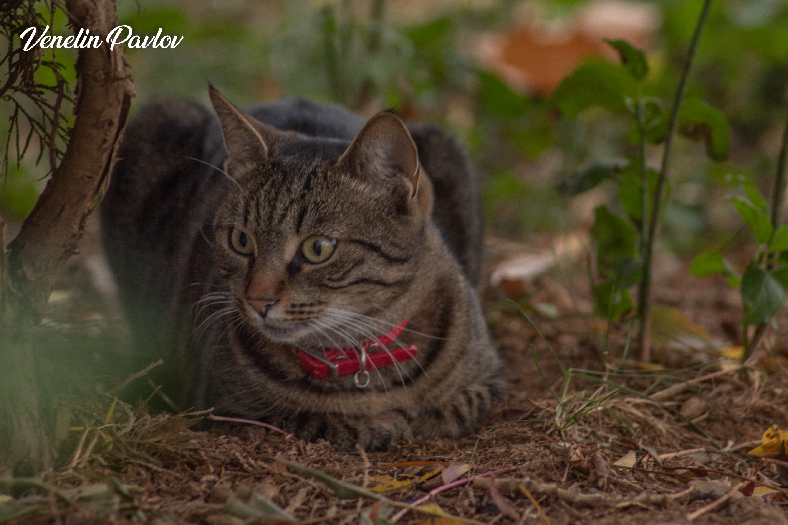
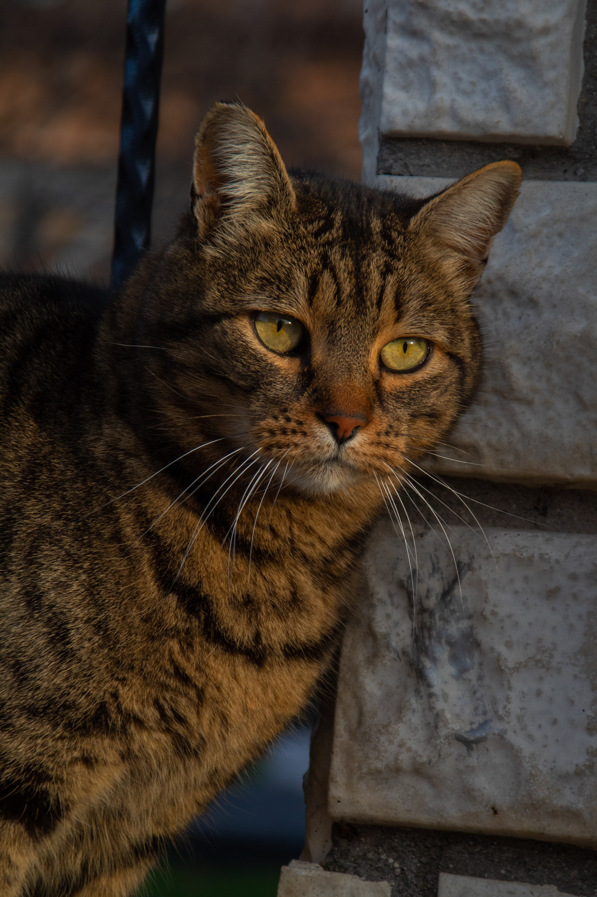
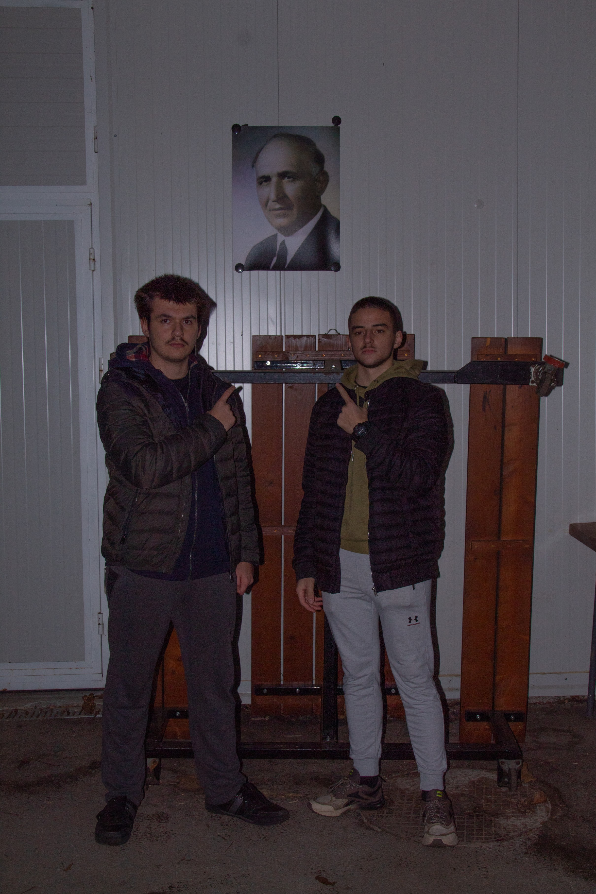

Gallery
Prices
Venelin Pavlov
Contact Info
Home
      
❮
❯
Interesting Photography Facts
Did you know that the first photograph ever taken took about 8 hours to capture?
The word "photography" comes from Greek words meaning "drawing with light".
The first digital camera was created in 1975 by Steven Sasson, an engineer at Kodak.
Photography was initially considered an art of "magic" during its early years.
The longest photo ever taken is a 15-year-long exposure of the night sky in Iceland.
Watch This Video on Photography